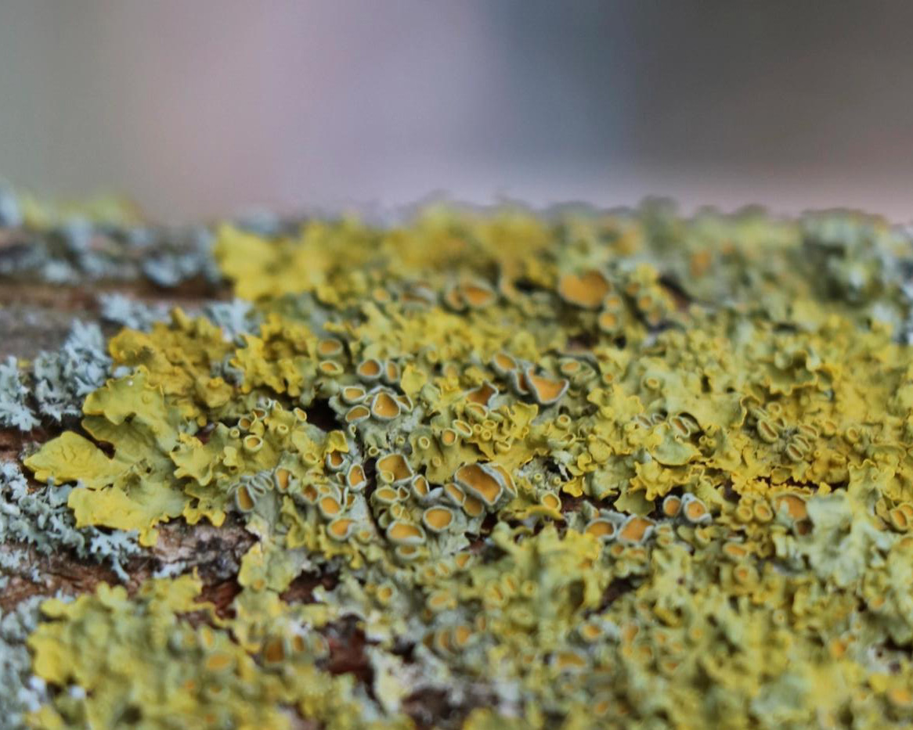

Lichen Literacy
Techniques for multispecies sensing
Lichens are biological pioneers. They can survive where others cannot. Even outer space. Lichens are biological sensors. They can tell us about atmospheric conditions, geological change, and biodiversity. Xanthoria parietina is a nitrophilous lichen. It thrives in environments that are high in nitrogen from road traffic emissions and agrochemical fertilisers. My artistic research with lichens, especially X. parietina, explores a lichenous perspective on air pollution, inspiring people to think about the issue from a non-human perspective. As research and development, I consulted the Lichen Collection at the Natural History Museum and attended fieldwork with The British Lichen Society.
I have facilitated lichen mapping workshops with the Royal College of Art and Koppel Project Exchange (as part of WHAT ON EARTH exhibition, July 2021). These events provide an introduction to urban lichens, blending creative methods with outdoor observation techniques. This art-research also led to the design of an interactive installation at the Hockney Gallery (Archives of Curiosity, 2019). Inspired by the concept of eco-literacy, the Lichen Literacy installation invited visitors to interface with X. parietina across multiple scales (micro, macro, human) and via multiple sensory engagements (aural, visual, haptic). | Exhibition photography by Pham Thuy Doung.


In the video for Lichen Literacy, a micrograph of nitrogen-loving lichen X. parietina, appears to breathe centre-frame. The audio comprises excerpts from interviews with a lichenologist and an air quality analyst. The speakers explain how variations in air pollution over space and time are reflected in the populations of lichens and mosses. These sensing species detect and respond to fluctuations in specific chemicals and metals produced by human industries.